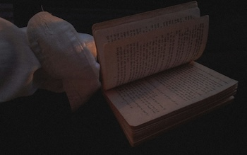
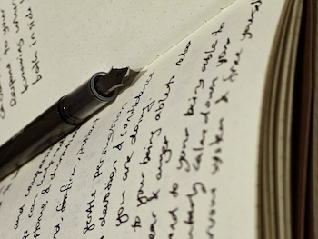

The ORV trio consists of Kim Dokja (the reader), Yoo Joonghyuk (the protagonist), & Han Sooyoung (the writer), all of who have made great sacrifices in an attempt to save their loved ones/companions. The bond these three share is quite strong, having gone through many trials and different timelines and universes together. Even in terms of just the roles they all embody, we can see the connections between a reader, protagonist, and writer. After all, without the reader there would be no one to hear/enjoy the story, without a protagonist there would be no story, and without the writer there would be no one to tell the story.
Yoo Joonghyuk is the protagonist/main character of Three Ways to Survive the Apocalypse, which had been available to read before the scenarios started, where he endures many regressions/cycles in his attempt to end the scenarios. The original novel describes Yoo Joonghyuk as a strong character, who had defeated many enemies, but had a deteriorating mental state because of how many times he had to relive the same scenarios over and over again. With the interference of the reader, he is able to change the way his story was meant to go and achieve a happier ending for his companions as he tried to do for so long. Yoo Joonghyuk is very driven and cares deeply for his friends/loved ones, accepting the offer to relive the scenarios over a thousand times to be able to know the truth about their world and be able to meet the person who helped him make it to his happy ending the first time. He is not one to accept defeat, going on a journey across multiple universes and timelines to spread a story that they hoped would help Kim Dokja remember and come back to his companions again.
There will come a soldier, who carries a mighty sword, he will tear your city down.
-The Oh Hellos

Open Book
[The Reader]
Not only does Dokja mean reader in Korean, but Kim Dokja turned out to be the only reader who finished reading the thousands of chapters of Three Ways to Survive the Apocalypse (TWSA) that were released/written over more than a decade. TWSA was a story that Kim Dokja found during a difficult period of his life when not a lot of things were going well for him, which was mostly be design as it was a story written just for him to continue existing. Kim Dokja's role as a reader often makes him feel separated from the people around him, especially the people who used to be characters in his favorite story, before he was able to exist that they were now real and people he truly came to care about it. This also caused him to feel responsible for saving both the characters and people he met on his journey because of how they saved him so many years ago. Kim Dokja's love of the story motivated all the sacrifices he made for his companions, with the final sacrifice that he made (which caused him separate himself in two, one part doomed to be forever alone) causing his companions to do whatever it would take to find him and put him back together. Although it is never known if they were actually able to bring him back because of ORV's open ending, many hope that he was able to reunite with his companions and finally reach his happy ending.
There will come a ruler, whose brow is laid in thorn, smeared with oil like David's boy.
-The Oh Hellos

Writing Pen
[The Writer]
Han Sooyoung is the writer/author of this trio, with one of her first scenes being her telling Dokja about her past writing career and him calling her a plagiarist because of the similarities between her book and the one Dokja loved so much. Little do they know that it was actually another timeline of Han Sooyoung who wrote it after seeing how much Dokja was suffering in the past, dooming many people who would perish when the scenarios came to past. For over a decade, Han Sooyoung wrote daily chapters for Dokja to read until they reached the time when the scenarios started, where she gifted him his own copy to review and help him survive the scenarios, saving his life more than once. After Kim Dokja's sacrifice to keep the world/story going, Han Sooyoung dedicated much of her time after to write down the story of Dokja and the rest of their companions in hopes of getting Dokja to remember all that happened, stating she would even continue to write for eternity if they had even the slightest chance of bringing back his memories.
There will come a poet, whose weapon is his word, he will slay you with his tongue.